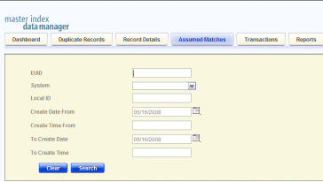
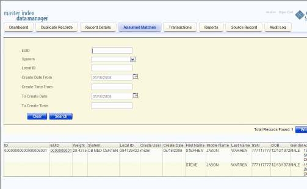
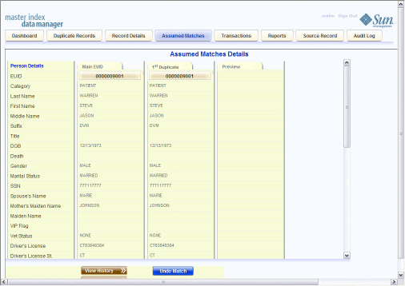

Working with Assumed Matches on the MIDM
The Assumed Matches function of the MIDM allows you to view any object profiles that were automatically updated by the master index application as a result of an assumed match. You can reverse the assumed match if necessary. The following topics provide instructions for finding profiles updated by an assumed match and then reversing the update if necessary. Perform the following tasks to work with profiles that were automatically matched.
Finding Assumed Matches on the MIDM
You can find object profiles that were updated by an assumed match using the Assumed Matches function of the MIDM. When you search for assumed matches, you can select an object profile to view from a results list to determine whether the assumed match was made correctly.
To Find Assumed Matches
- Obtain information about the object profile you want to view, such as their EUID, a system in which they are registered, or the login ID of the user who added the record that caused the update.
- In the tabbed headings, select Assumed Matches.
The Assumed Matches search page appears.
Figure 58 Assumed Matches Search Page
 - On the Assumed Matches search page, enter the search criteria (for more information, see About Assumed Matches Search Fields).
- Click Search.
The Assumed Match Result page appears (for more information, see About Assumed Match Results Fields on the MIDM).
Figure 59 Assumed Matches Search Results List
 - In the Results list, click the ID of the assumed match profile you
want to view.
The Assumed Matches page appears with the assumed match profile displayed.
Figure 60 Assumed Matches Comparison Page
 - To view additional information about the object, review the instructions provided under Viewing Object Profiles on the MIDM.
- To undo the assumed match transaction, follow the instructions provided under Reversing an Assumed Match on the MIDM.
About Assumed Matches Search Fields
The fields located on the Assumed Matches search page allow you to specify information about the assumed match profiles you want to view.
Table 9 Assumed Matches Search Fields
In this field … |
type or select ... |
|---|---|
The enterprise-wide unique identification number of the profile you want to view. |
|
The external system with which the object profile that caused the assumed match is associated. |
|
The local ID associated with the object profile in the specified system. The name of this field might be different for your implementation. |
|
A beginning create date for the profiles you want to view. The query is performed for transactions that were created between the Create Date From (and Create Time From) and the To Create Date (and To Create Time). |
|
The beginning create time for the profiles you want to view (using 24-hour notation). If no time is entered, the default value is 00:01 (12:01 A.M.). |
|
The ending create date for the profiles you want to view. |
|
The ending create time for the profiles you want to view (using 24-hour notation). If no time is entered, the default value is 24:00. |
About Assumed Match Results Fields on the MIDM
The fields located in the assumed match results list help you to identify an assumed match transaction to display on the Assumed Matches comparison page.
Table 10 Assumed Match Results Fields
This field … |
displays this information … |
|---|---|
The assumed match ID of the transaction that caused the assumed match. |
|
The enterprise-wide unique identification number of the object profile that was updated by the assumed match. |
|
The matching probability weight between the updated profile and the record that caused the assumed match. |
|
The system with which the record that caused the assumed match is associated. |
|
The local ID in the above system for the record that caused the assumed match. The name of this field might be different for your implementation. |
|
The login ID of the user who added the profile that created the assumed match. |
|
The date and time the transaction that caused the assumed match occurred. |
Reversing an Assumed Match on the MIDM
If you find that an assumed match was made in error, you can reverse the assumed match. This process returns the updated object profile to its status just prior to the assumed match update, creates a new object profile for the record that caused the assumed match, and recalculates the SBR for the existing profile.
To Reverse an Assumed Match
- View the assumed match profile, as described in Finding Assumed Matches on the MIDM.
- In the upper portion of the page, click Undo Assumed Match.
A confirmation dialog box appears, providing the EUID number of the new profile that will be created as a result of reversing the match.
- On the confirmation dialog box, click OK.
The assumed match is reversed, the updated profile is returned to its state prior to the assumed match, and a new object profile is created for the source record that caused the assumed match. Any changes that were made after the assumed match but before reversing the assumed match are retained.